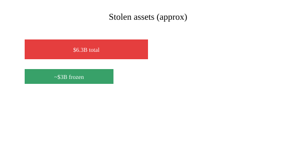

Cryptocurrency · security · 30 October 2026
Hackers steal approximately $6.3 billion from Binance in largest known crypto heist.
What is agreed across desks
Beginning late on 29 October 2026, attackers drained approximately $6.3 billion in cryptocurrency from wallets controlled by the exchange Binance across at least ten blockchains, including Ethereum, Bitcoin, Tron and Solana. The bulk of the transfers occurred in roughly 20 minutes. Binance suspended deposits and withdrawals, stated that customer funds would be covered from its secure-asset fund and company reserves, and reported that roughly $3 billion (primarily stablecoins) had been frozen by issuers such as Tether and Circle. Blockchain analytics firms TRM Labs, Elliptic and Chainalysis have attributed the attack with high confidence to the North Korean hacking group TraderTraitor (linked to Lazarus Group).
What is only a quote
Binance co-CEO Richard Teng said losses would be covered. That is a corporate commitment, not a completed transfer. Attribution to North Korea rests on the pattern-matching of analytics firms; no public government confirmation or arrest has been announced. The precise initial access vector (compromised laptop or signing infrastructure) is described in company and firm statements but has not been independently verified in a published forensic report.
Mechanism a reader needs
Cryptocurrency exchanges hold large hot wallets to process user withdrawals. Once an attacker obtains the ability to sign transactions from those wallets, funds can be moved to attacker-controlled addresses in minutes. Stablecoins can be frozen by their issuers; native coins such as Bitcoin and Ether generally cannot. Roughly half the stolen value has been frozen; the remainder is being swapped into non-freezable assets. This incident exceeds the previous record (Bybit, ~$1.5 billion in 2025) by a factor of four. North Korean state-linked groups have conducted multiple large exchange thefts; proceeds have been linked by analysts to weapons programs and sanctions evasion, though that use is inferred from prior cases rather than proven for these specific coins.
Binance is the world’s largest exchange by volume. A theft of this scale tests both technical controls and the exchange’s ability to make users whole without a bank run. The company has said it reserved more than $6 billion in matching assets. Market prices of major cryptocurrencies declined following the announcement.
What this story is not
It is not a statement that all customer funds are already restored. It is not a confirmed arrest or a final government attribution. The logo is a type graphic, not an event image.

Source articles and scores
| Outlet | Headline | T | N | C |
|---|---|---|---|---|
| Reuters | Gone in 20 minutes: How the biggest heist in crypto history unfolded | 96 | 0 | 100 |
| WIRED | The $6.3 Billion Binance Hack Was Pulled Off in Just 20 Minutes | 94 | 0 | 98 |
| Al Jazeera | Binance says $6.3bn stolen in biggest crypto heist in history: What we know | 93 | 0 | 97 |
Hero: Binance logo via Commons Special:FilePath (type graphic). Chart is original SVG. No news CDN images used as sole source.